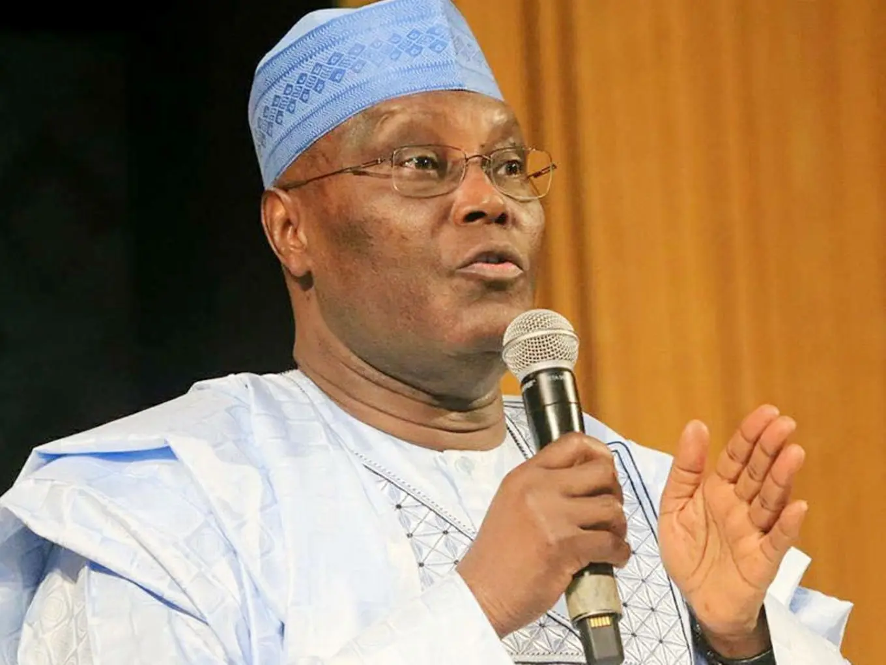
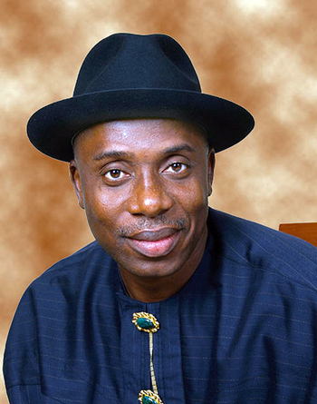
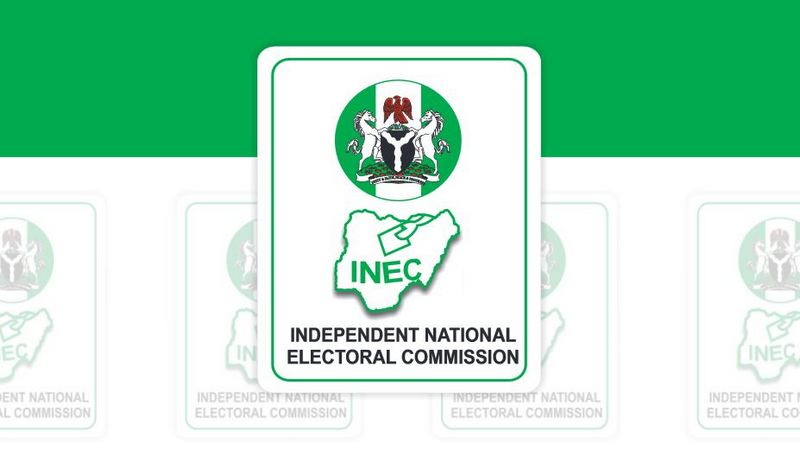
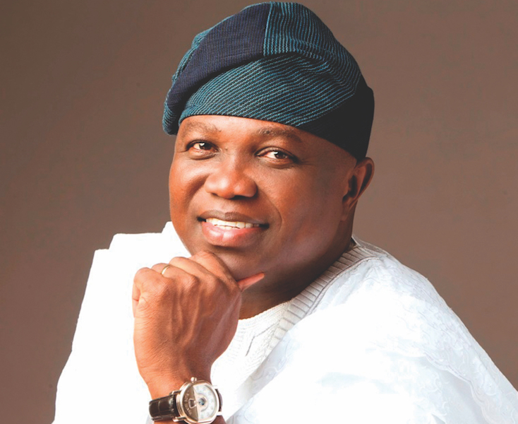
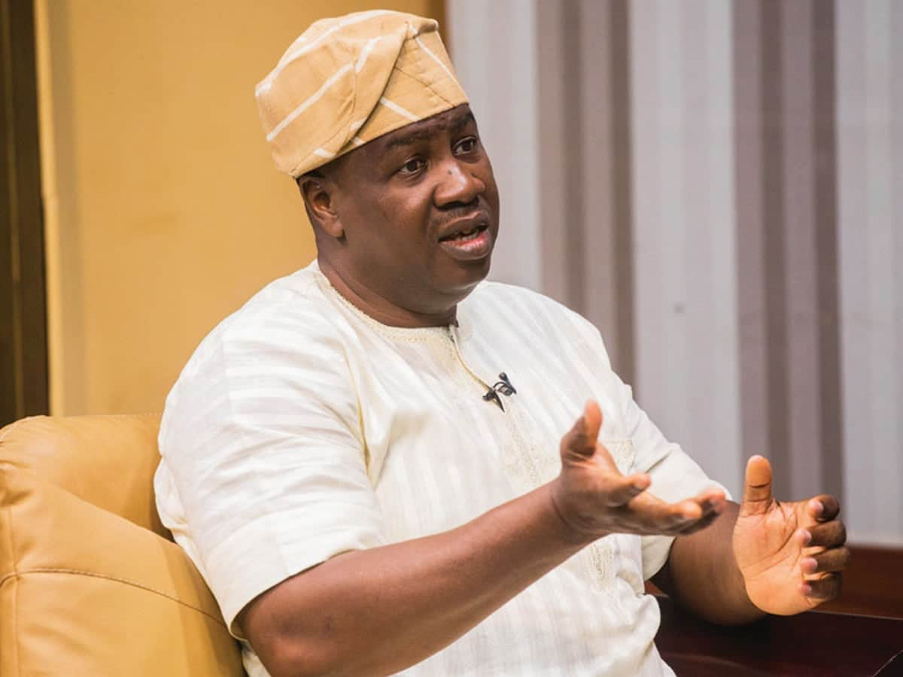
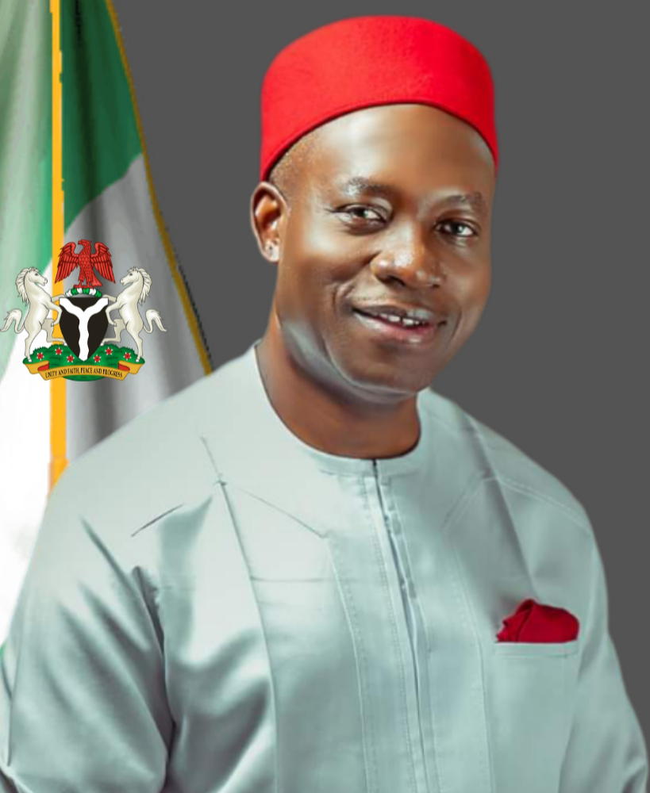

office and candidates:

Yemi Osinbajo
@Presidency -- Nigeria


Atiku Abubarkar
@Presidency -- Nigeria


Rotimi Amaechi
@Presidency -- Nigeria

Omoyele Sowore
@Presidency -- Nigeria


Jimi Agbaje
@Lagos State Governor -- Nigeria
Babajide-Sanwo-olu
@Lagos State Governor Nigeria

Akinwunmi Ambode
@Lagos State Governor Nigeria

Gbadamosi Alebiosu
@Senatorial candidate Nigeria
Tokunbo Abiru
@Senatorial candidate Nigeria
